La vidéo de Jack Vs. AI met en lumière une transition paradigmatique cruciale dans la réalisation de films par intelligence artificielle : le passage d'une micro-gestion technique fastidieuse (l'écriture manuelle et répétitive de prompts) à une posture de véritable direction artistique. L'auteur y démontre comment s'affranchir du "baby-sitting" d'outils fragmentés en déléguant la complexité textuelle et technique à un agent conversationnel central. Au lieu de jongler manuellement avec des paramètres ardus ou de concevoir des invites complexes sur des interfaces tierces, le créateur importe simplement son scénario brut et discute de ses intentions avec l'IA.
La méthode pas à pas s'articule autour d'un dialogue itératif et intelligent : l'agent analyse d'abord le script, pose des questions de cadrage (comme la résolution ou le format 16:9), puis génère automatiquement les briques fondamentales du film (feuilles de personnages, de décors et d'accessoires). Tout au long de la production, l'agent orchestre la génération d'images et de vidéos en combinant des outils spécialisés, tout en effectuant un contrôle qualité autonome (approuvant ou rejetant les visuels non conformes). Lorsque le résultat s'éloigne de la vision du réalisateur — comme un personnage trop statique —, la correction se fait par simple instruction conversationnelle, garantissant une fluidité de workflow et une cohérence visuelle absolue d'un plan à l'autre.
Pour les créateurs de contenu et les cinéastes indépendants, cette approche redéfinit l'ergonomie de la production virtuelle. Elle permet de se concentrer exclusivement sur la narration, le rythme, le choix des plans et l'évolution de l'intrigue, tandis que l'agent gère la traduction technique en arrière-plan. Le résultat est un gain de temps massif, une réduction de la charge cognitive et une constance stylistique remarquable, ouvrant la voie à des productions cinématiques de 60 secondes (et plus) d'une grande fluidité narrative.
Tous les outils de réalisation de films par IA ont le même problème. Vous passez plus de temps à gérer l'IA qu'à réaliser réellement votre film. Vous écrivez des prompts, choisissez des modèles et ré-expliquez vos personnages pour chaque plan. Vous ne dirigez pas, vous faites plutôt du baby-sitting. Mais et s'il existait une IA qui comprenait réellement votre projet ? Vos personnages, votre univers, votre langage visuel, et qui maintenait la cohérence dans chaque scène. Vous téléchargez simplement votre scénario et l'IA s'occupe du reste. Ça a l'air génial, n'est-ce pas ? Eh bien, c'est exactement le type d'outil que je teste. Et je vais vous montrer comment je
Interface & Outils : Présentation face caméra sans partage d'écran
Contenu textuel & Code : Aucune interface logicielle n'est affichée. Les images montrent des illustrations cinématiques générées par IA (personnage boutonnant sa veste, puis portant un casque de scaphandre) et le créateur (Jack) face caméra dans son studio avec un micro et un néon en arrière-plan.
Action / Démonstration : Le créateur s'adresse directement aux spectateurs en studio, illustré par des plans visuels générés par IA en lien avec son discours.
l'a utilisé pour construire ce court métrage cinématique. Et si vous aimez la vidéo d'aujourd'hui, les gars, assurez-vous de lâcher un pouce bleu pour moi, pensez à vous abonner et, bien sûr, à cliquer sur cette cloche de notification. Très bien, entrons dans le vif du sujet. Donc pour la vidéo d'aujourd'hui, nous sommes sur NVIDIA, et si vous voulez aller de l'avant et suivre, vous trouverez un lien, comme toujours, en bas dans la description. Nous sommes donc simplement sur la page d'accueil ici, et vous pouvez voir juste en face de nous, nous avons Agent 1. C'est l'outil d'IA qui va nous aider à donner vie à notre film. Il y a donc évidemment toute une série de façons différentes d'utiliser cet outil, mais ce que j'ai fait, c'est que j'ai cliqué sur cette icône plus ici et je suis allé de l'avant et
Interface & Outils : Interface web de l'outil d'IA InVideo (mentionné par erreur comme NVIDIA par le créateur) avec un panneau de saisie de prompt et un explorateur de fichiers intégré.
Contenu textuel & Code : Texte à l'écran : « Introducing Agent One » avec les sous-options « Agent mode » et « Autopilot », un champ de saisie « Plan a script, storyboard or video », ainsi que des boutons de suggestions rapides (Product Ads, Create AI shorts, Use my script, Make explainer video). Dans l'explorateur de fichiers : un fichier PDF nommé « THE BUBBLE.pdf » et des dossiers « Video Gen », « Recordings », « Image Gen », « Audio ».
Action / Démonstration : Le créateur présente l'interface de l'outil Agent One, montre un court métrage réalisé avec l'IA, puis navigue dans l'arborescence des fichiers du projet.
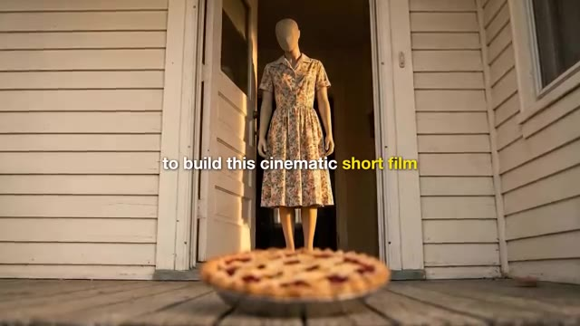
🔍 Agrandir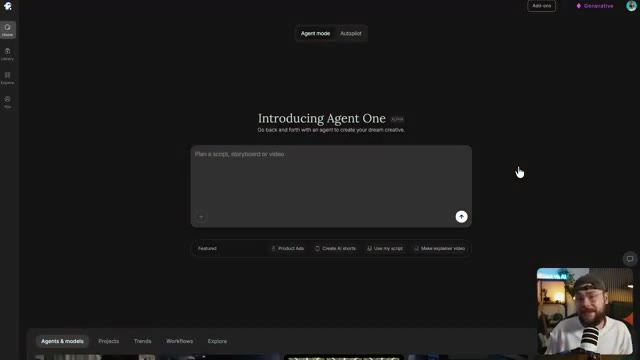
🔍 Agrandir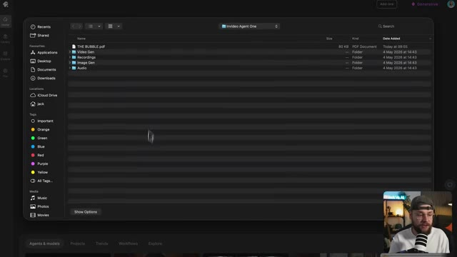
🔍 Agrandirj'ai téléchargé le scénario de mon court-métrage et j'ai ensuite ajouté cette consigne très simple pour l'agent. Voici mon scénario pour un court-métrage que je veux faire durer environ 60 secondes. Je veux que tu utilises par défaut Nano Banana Pro pour la génération d'images et C-Dance 2 pour la génération de vidéos, et je veux immédiatement faire ici une distinction très claire entre le type d'utilisation normale des prompts, qui peut être assez lourd et technique, et pour lequel vous pourriez avoir besoin d'utiliser un outil séparé comme Claude.
Interface & Outils : Interface web d'un agent IA ('Agent One') avec un mode agent et un mode autopilote, un champ de saisie central pour planifier un script, un storyboard ou une vidéo, et une incrustation vidéo (PiP) du présentateur en bas à droite.
Contenu textuel & Code : Texte affiché à l'écran : "Introducing Agent One", "Plan a script, storyboard or video", ainsi que des boutons de raccourcis : "Product Ads", "Create AI shorts", "Use my script", "Make explainer video".
Action / Démonstration : L'écran affiche l'interface principale de l'agent de création avec une incrustation vidéo du créateur dans le coin inférieur droit s'adressant aux spectateurs.
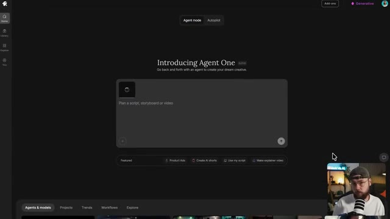
🔍 AgrandirAlors qu'avec l'agent numéro un, nous avons en quelque sorte cette conversation de va-et-vient. En tant qu'utilisateur, vous vous concentrez plutôt sur le côté créatif des choses tandis que votre agent prend le contrôle du côté plus technique. Une fois que nous aurons envoyé ceci, nous serons invités à créer un nouveau projet. Je vais donc simplement appeler celui-ci "the bubble", et cliquer sur créer un projet. Et maintenant, il nous sera demandé de nommer notre agent. Je vais donc simplement appeler celui-ci "director" et l'envoyer. Vous pouvez donc voir que la première chose que notre agent a faite a été d'inspecter le script.
Interface & Outils : Interface web d'un outil de création vidéo par IA (type InVideo / Agent One).
Contenu textuel & Code : Texte du prompt dans l'image 2 : "This is my script for a short film, that I want to last around 60 seconds. I want you to default to using Nano Banana Pro for image generation and Seedance 2.0 for video generation." Texte de l'image 3 : "About this project", "THE BUBBLE - 60s short film", analyses de l'agent "Attachments analyzed: THE_BUBBLE.pdf", "Read it. This is a strong piece of writing, Jack."
Action / Démonstration : Le créateur montre l'interface de l'agent conversationnel, puis l'écran de création du projet et l'inspection du script par l'agent.
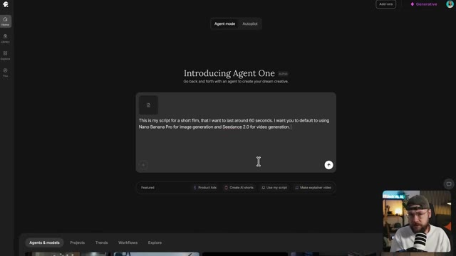
🔍 Agrandir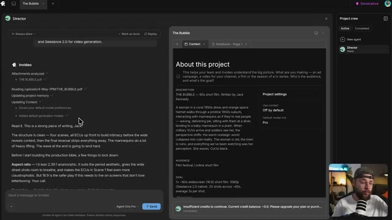
🔍 Agrandiressentiellement. Et ça a construit tout ce contexte autour de notre court-métrage. Donc ça voulait revérifier le format d'image ainsi que la résolution de sortie et je suis retourné vers lui et je lui ai juste dit que je voulais du 16 par 9 et juste du 1080p natif avec l'intention de potentiellement rééchantillonner après si j'en avais besoin et ensuite vous pouvez voir notre agent a répondu verrouillé en 16 par 9 1080p natif son diégétique intégré dans chaque prompt vidéo sans musique et maintenant il poursuit en exposant ce genre de plan de
Interface & Outils : Interface de l'outil de création vidéo IA Invideo (mode Director), avec panneau de chat de l'agent à gauche et gestionnaire de projet/contexte au centre, et la webcam du créateur en incrustation (PiP) dans le coin inférieur droit.
Contenu textuel & Code : Texte du projet "The Bubble", paramètres de rapport de format (16:9, 1080p natif Seedance 2.0), instructions sur l'audio diégétique sans musique, et plan de production détaillé (Phase 1 : Production Bible, Character master sheet, Look-dev boards).
Action / Démonstration : Le créateur montre son écran avec l'interface d'Invideo où l'agent discute des paramètres techniques et valide le format d'image, tandis qu'il parle face caméra dans l'encadré PiP.
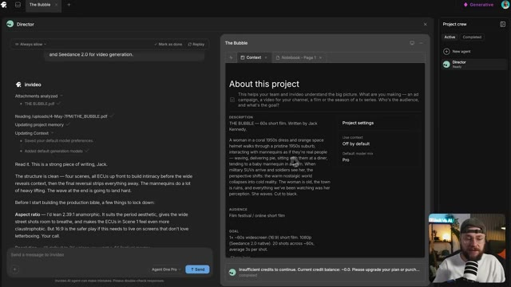
🔍 Agrandir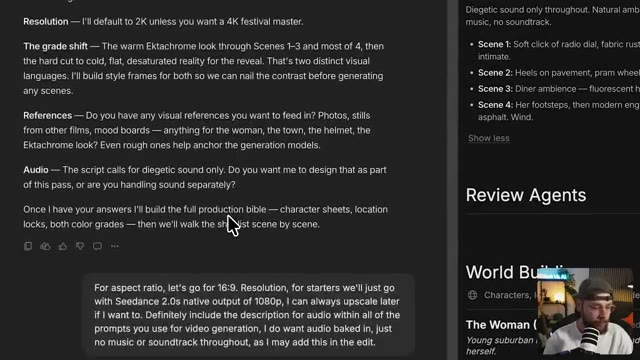
🔍 Agrandir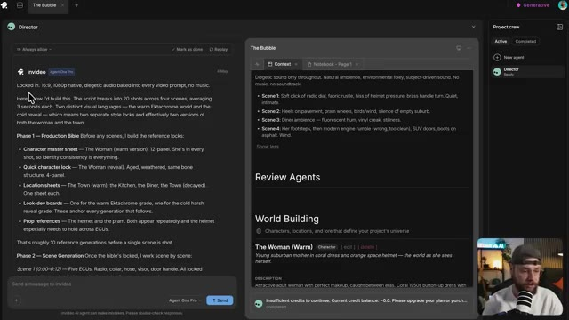
🔍 Agrandirattaque et une grande partie de cela vous semblera très familier à vous qui vous intéressez à la réalisation de films par IA, donc ça suggère de construire des feuilles de personnages, des feuilles de lieux et des planches de look dev également, et même des références d'accessoires. Ça a continué et tout découpé en plusieurs scènes, et les plus observateurs d'entre vous verront que j'ai en fait un peu changé d'idée au fur et à mesure que le projet se développait, et c'était vraiment très cool aussi parce qu'on a ce genre de conversation de va-et-vient avec l'agent. Si vous voulez modifier des choses à la volée, c'est tout à fait possible, c'est
Interface & Outils : Application web de création de films par IA avec interface de chat agent et panneaux de gestion de projet (Director / World Building).
Contenu textuel & Code : Texte détaillé de découpage de scènes (Phase 1 - Production Bible, Character master sheet, Prop references, Phase 2 - Scene Generation, Scene 1 à 4) et options de l'agent (Agent One Pro).
Action / Démonstration : Le curseur de la souris survole le texte de l'interface décrivant les références d'accessoires et le découpage en scènes du projet.
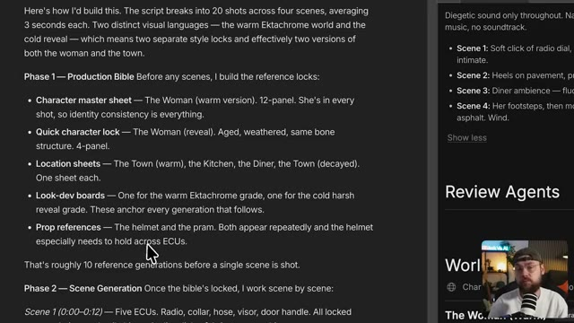
🔍 Agrandir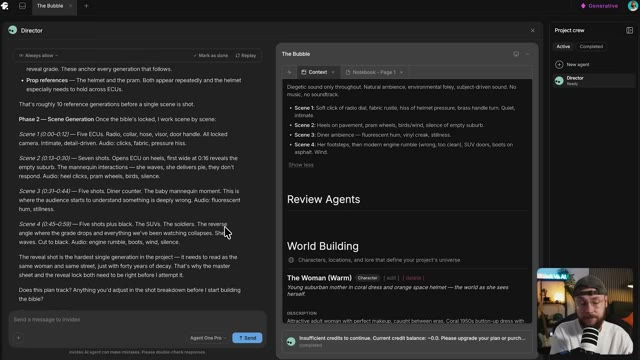
🔍 AgrandirEh bien. Vous n'êtes en quelque sorte bloqué dans aucune direction et vous pouvez voir qu'à ce stade, il a commencé à élaborer ces feuilles de référence de personnages et de lieux. Donc si nous allons de l'avant et ouvrons celle-ci ici, c'est exactement le type de style que je recherchais. C'est le personnage que j'ai décrit dans mon script, sauf que je n'ai pas eu à concevoir des invites pour cela. J'ai simplement collé mon script là-haut et l'agent vidéo a créé tout ce prompt vraiment détaillé à partir des informations contenues dans mon script.
Interface & Outils : Interface logicielle de génération vidéo et d'images par IA avec panneau latéral de prompts textuels et affichage de grille de personnages.
Contenu textuel & Code : Le panneau de droite affiche un prompt très détaillé : [STYLE]: Cinematic realism, shot on warm expired Kodak Ektachrome film stock... [LAYOUT]: single unified MASTER CHARACTER REFERENCE SHEET, 12-panel grid layout... [CHARACTER]:- Name: THE WOMAN... Young suburban mother... coral 1950s button-up dress with white trim... bright orange space helmet with clear bubble visor... La grille principale montre 12 panneaux avec différentes vues d'une femme des années 1950 portant une robe corail et un casque de cosmonaute.
Action / Démonstration : Le créateur présente à l'écran la feuille de référence du personnage générée automatiquement à partir de son script par l'agent vidéo, tout en commentant le résultat dans la fenêtre PiP en bas à droite.
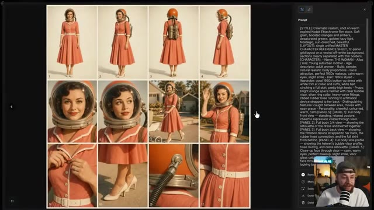
🔍 AgrandirEt ça a fait exactement la même chose ici pour deux versions alternatives de références de lieux. Vous remarquerez que cette scène ne finit pas par apparaître dans le film final. Comme je l'ai dit, j'ai fini par aller dans une direction légèrement différente à mesure que le projet se développait. Mais ce qui est intéressant aussi, c'est que l'Agent 1 va en fait approuver certaines de ses générations et en désapprouver d'autres.
Interface & Outils : Interface logicielle de gestion de projet IA ("The Bubble" / "Director") avec panneau de chat à gauche, historique des tâches au centre et incrustation vidéo (PiP) du présentateur en bas à droite.
Contenu textuel & Code : Texte du prompt visible : "Surface: 8-panel combined location reference sheet, arranged as a 2x4 grid (2 rows, 4 columns)... Shot on warm expired Kodak Ektachrome film stock...". Statut du projet : "Insufficient credits to continue...".
Action / Démonstration : Le présentateur explique le fonctionnement de l'approbation et de la désapprobation des générations d'images par l'Agent 1 pour des versions alternatives de lieux, tout en affichant l'interface et les détails des grilles de panneaux.
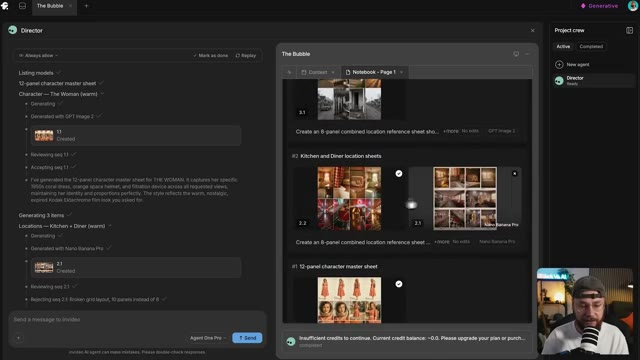
🔍 Agrandir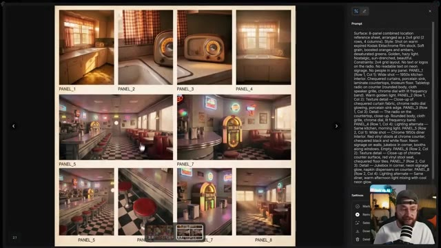
🔍 Agrandir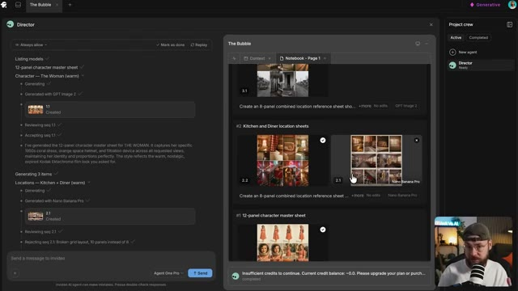
🔍 AgrandirDonc celui-ci, qui a fini par être utilisé pour le film lui-même, a été approuvé. Donc l'Agent 1 ne fait pas juste en quelque sorte générer des choses à la volée. Ce n'est pas comme un processus aléatoire. Il analyse réellement les images qu'il reçoit et décide si elles doivent être approuvées ou non. Nous avons donc fini par obtenir toutes ces superbes générations d'images de haute qualité pour en quelque sorte figer le personnage, exactement ce dont nous avions besoin.
Interface & Outils : Interface logicielle de type assistant de production par IA (Agent One / The Bubble) avec panneau de chat, interface de prompt détaillée et affichage de grilles d'images de référence.
Contenu textuel & Code : Texte du prompt visible : "Surface: 8-panel combined location reference sheet, arranged as a strict 2x4 grid... Style: Shot on warm expired Kodak Ektachrome film stock...". Panneau de gauche avec le statut de production ("Production bible's locked. Six reference sheets...").
Action / Démonstration : Présentation et analyse par le créateur des fiches de référence de décors générées et approuvées par l'agent IA pour le film.
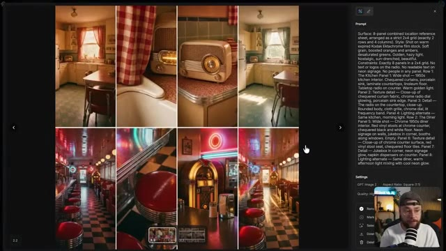
🔍 Agrandir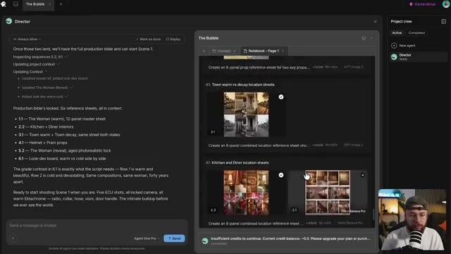
🔍 Agrandiret ce que j'aurais fait si j'avais travaillé sur ce projet moi-même, fondamentalement. Et puis notre agent dit, prêt à commencer le tournage de la scène un quand vous l'êtes. Il s'agit juste de vérifier ici que nous sommes complètement satisfaits de toutes les références qu'il a accumulées parce que, bien sûr, tout ce qui suit est influencé par elles.
Interface & Outils : Présentation face caméra sans partage d'écran
Contenu textuel & Code : Aucun texte, prompt ou interface logicielle n'est affiché à l'écran. L'image montre uniquement le créateur dans son studio.
Action / Démonstration : Le créateur s'adresse directement à la caméra en parlant de son projet et de l'interaction avec l'agent IA.
Et maintenant vous pouvez voir que j'ai commencé à récupérer ma génération de vidéo. Donc, par exemple, nous avons le premier plan ici. Bien sûr, cela a été construit dans Seedance 2, juste comme je l'ai dit à l'Agent 1 que je voulais qu'il l'utilise dans le genre de configuration initiale de notre projet. Donc j' vraiment aimé celui-ci ici en particulier.
Interface & Outils : Interface web d'InVideo (mode Director / Agent One Pro) avec panneau de gestion de projet, timeline de plans et panneau de prompts textuels détaillés.
Contenu textuel & Code : Texte du prompt visible : "PREAMBLE: The attached images are multi-panel reference sheets... MODE: MRC SHOT STRUCTURE: 4s / 1 shot / 16:9 STYLE OPENER: Warm expired Kodak Ektachrome film stock..." ainsi que l'historique de génération de l'Agent 1 ("Reading context", "Generated with Seedance 2.0").
Action / Démonstration : Le créateur navigue à travers l'interface de montage et de génération par IA d'InVideo, sélectionnant et inspectant des plans vidéo générés par Seedance 2.0.
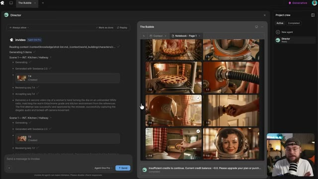
🔍 Agrandir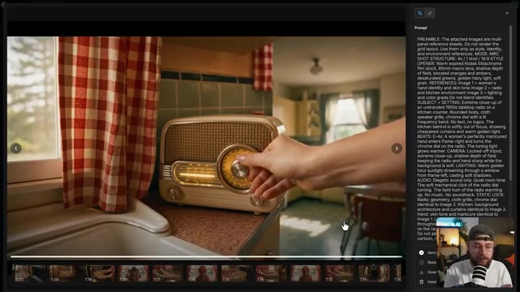
🔍 Agrandir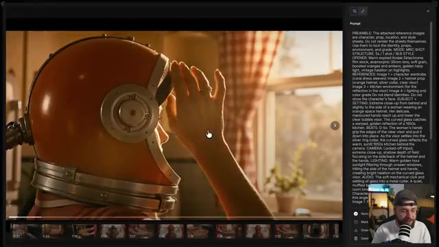
🔍 AgrandirJe pensais que cela fonctionnait très bien. Et bien sûr, cela a été utilisé dans le film final. Et à mesure que je reçois beaucoup plus de générations, c'est là que le genre de flux de travail conversationnel commence vraiment. Donc vous pouvez voir que j'ai dit 7.12 approuvé, 7.11 a encore besoin de travail. Nous devons être derrière le casque.
Interface & Outils : Interface de travail et de chat avec un assistant IA (Invideo / Agent One Pro).
Contenu textuel & Code : Texte de prompt détaillé visible dans l'image 1 ('PREAMBLE: The attached reference images are character, prop, location...'). Dans l'image 3, un message de l'utilisateur indique : '7.12 approved, 7.11 still needs work, we need to be behind the helmet, maybe the woman is stood wearing it, looking out the window of the kitchen, ECU, tightly framed.'
Action / Démonstration : Le créateur montre son interface de travail en train de réviser et de valider des générations de plans vidéo IA via un flux de discussion textuel.
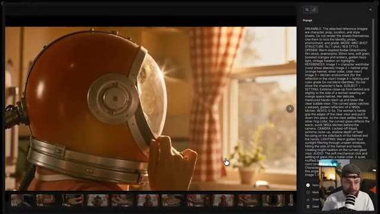
🔍 Agrandir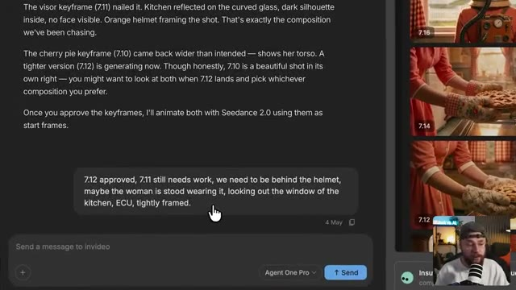
🔍 AgrandirPeut-être que la femme se tient debout en le portant, en regardant par la fenêtre de la cuisine. Et avec cela, nous commençons à récupérer ces générations d'images de Nano Banana Pro. Et j'ai vraiment, vraiment aimé celle-ci ici. Gardez à l'esprit que notre personnage, bien sûr, et le lieu restent bien cohérents grâce à ces feuilles de personnages et de lieux qui ont été construites pour nous un peu plus tôt.
Interface & Outils : Interface de chat et de génération d'images par IA avec panneau de réglages (Nano Banana Pro).
Contenu textuel & Code : Texte du prompt visible sur l'image 2 décrivant le plan cinématographique : "Motion-safe cinematic film still. Extreme close-up from directly behind the woman...", avec des paramètres de résolution (2K) et le modèle Nano Banana Pro.
Action / Démonstration : Le créateur navigue dans l'interface pour montrer les images générées et commente la cohérence des personnages et des décors.
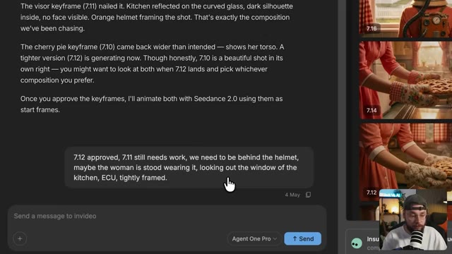
🔍 Agrandir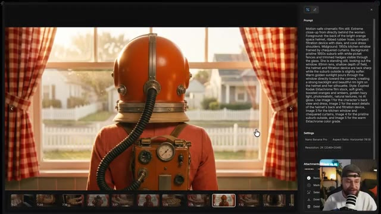
🔍 AgrandirCela a été animé avec Sea Dance 2 et on obtient ce très joli résultat de la femme qui soupire en quelque sorte. C'est sympa mais ça préserve aussi la surprise. On ne l'a pas encore vue complètement. Ça construit en quelque sorte cette tension et cette curiosité pour le spectateur. Et pour la scène suivante, l'agent utilise à nouveau cette méthode éprouvée.
Interface & Outils : Interface logicielle de SeaDance 2.0 et panneau de gestion de projet par agent IA (The Bubble).
Contenu textuel & Code : Panneau de prompt visible à l'écran avec des paramètres techniques (Mode: 12V SHOT STRUCTURE: 5s / 1 shot / 16:9 STYLE OPENER: Warm expired Kodak Ektachrome film stock...), ainsi que des vignettes de séquences numérotées (8.4, 8.5, 8.6, 8.2, 8.1).
Action / Démonstration : Le créateur montre l'interface de SeaDance 2.0 avec le résultat animé de la femme de dos, puis bascule sur l'interface de l'agent listant les différentes scènes générées.
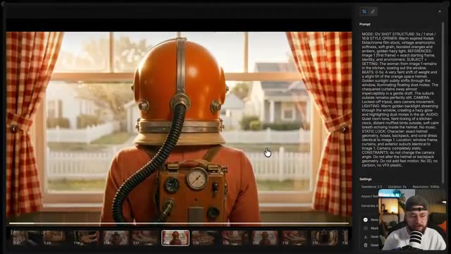
🔍 Agrandir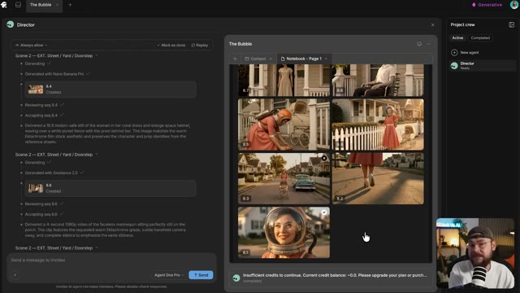
🔍 AgrandirVous pouvez donc voir qu'il génère un certain type de visuels clés avec Nano Banana Pro qui seront utilisés tout au long de la scène. Et on continue pour construire nos générations avec Sea Dance 2. Donc ce plan particulier ici où l'on commence à introduire les mannequins comme une sorte d'accessoire. Ainsi le spectateur comprend que quelque chose ne tourne décidément pas rond ici.
Interface & Outils : Interface logicielle de génération d'images et de vidéos (Nano Banana Pro et Seedance 2.0), avec incrustation vidéo du créateur en bas à droite.
Contenu textuel & Code : Texte de prompt descriptif pour l'image (ex: "16:9 motion-safe still, close-up hero portrait...") et pour la vidéo (ex: "MODE: MRC SHOT STRUCTURE: 4s / 1 shot / 16:9 STYLE OPENER..."). Paramètres visibles : Seedance 2.0, Durée 4s, Résolution 1080p, Ratio 16:9.
Action / Démonstration : Le créateur montre l'utilisation de Nano Banana Pro pour créer les visuels clés, puis passe à Seedance 2.0 pour générer le plan avec les mannequins sur le porche.
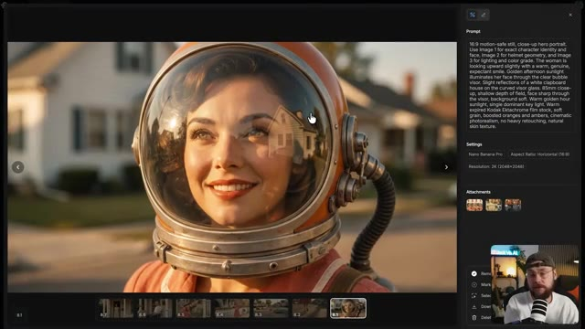
🔍 Agrandir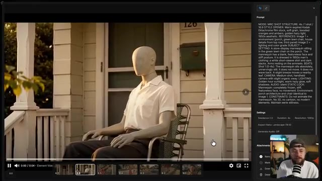
🔍 AgrandirLes choses deviennent un peu flippantes. Et puis, bien sûr, nous avons ce premier plan ici où nous faisons pleinement la connaissance de notre personnage, un plan en pied complet pour la première fois. Nous commençons vraiment à avoir une idée de l'ambiance du film maintenant. Maintenant, comme c'est toujours le cas avec l'IA, vous allez obtenir des générations qui ne font pas exactement ce que vous voulez.
Interface & Outils : Interface de l'outil de génération vidéo Seedance avec panneau de prompt latéral, paramètres de durée/résolution et ligne temporelle de vignettes en bas.
Contenu textuel & Code : Texte du prompt visible à droite : "MODE: I2V SHOT STRUCTURE: 5s / 1 shot / 16:9 STYLE OPENER: Warm expired Kodak Ektachrome film stock..." et les réglages : Seedance 2.0, Duration: 5s, Resolution: 1080p, Aspect Ratio: Landscape (16:9).
Action / Démonstration : Visualisation d'un plan vidéo généré par IA montrant un personnage en pied dans un environnement rétro, avec la mini-caméra de Jack en incrustation (PiP) dans le coin inférieur droit.
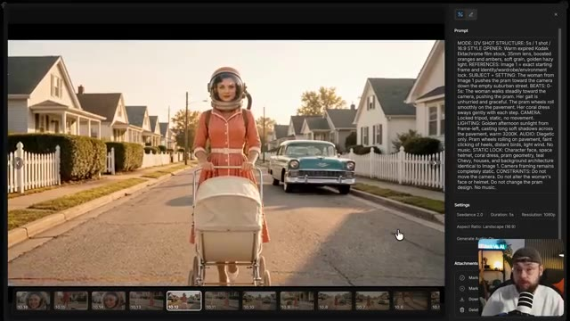
🔍 AgrandirC'est là que le type de différence commence à se faire sentir, car nous pouvons dire à l'Agent 1 : pouvons-nous faire en sorte qu'elle marche et fasse coucou dans ce plan d'origine ? Elle est juste là à peu près immobile et sourit. Ça n'a pas vraiment beaucoup de sens. Ce n'est pas particulièrement dynamique. Et l'Agent 1 comprend parfaitement. Il procède à la régénération du même plan en utilisant ce visuel clé avec Seedance 2.
Interface & Outils : Interface de l'outil de direction par IA (The Bubble / Agent One Pro) combinant un panneau de chat textuel et une grille de prévisualisation vidéo.
Contenu textuel & Code : Panneau de chat affichant les instructions (ex. "10.14 can we make it look like she's walking and waving?") et panneau latéral avec les prompts détaillés ("MODE: I2V SHOT STRUCTURE: 4s / 1 shot...").
Action / Démonstration : Le créateur montre l'interface de l'agent conversationnel IA où il demande de modifier un plan vidéo (femme en combinaison spatiale) pour qu'elle marche et fasse un signe de la main.
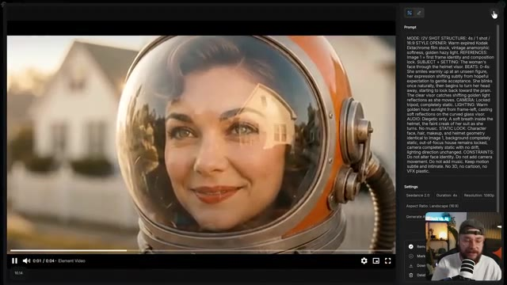
🔍 Agrandir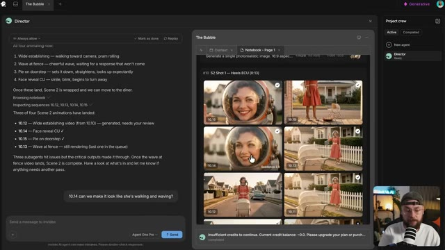
🔍 AgrandirEt puis c'est ce qu'on a obtenu en retour, que vous auriez vu et qui s'est retrouvé dans le film final. Et c'est là que le projet commence à devenir vraiment intéressant parce qu'au fur et à mesure qu'il se développait, qu'il s'assemblait en quelque sorte, j'ai décidé de prendre une autre voie pour le genre de révélation afin de tout lier. Donc tout d'abord, j'ai dit à Agent One, j'aime bien 10.15.
Interface & Outils : Interface de Seedance 2.0 et application de gestion de projet / agent IA 'The Bubble' avec panneau de chat et prévisualisations vidéo.
Contenu textuel & Code : Sur l'image 1 : Prompt complet décrivant le plan ("MODE: I2V SHOT STRUCTURE...", "The woman in the orange space helmet..."). Paramètres : Seedance 2.0, Durée: 4s, Résolution: 1080p, Aspect Ratio: 16:9, Generate Audio: On. Sur l'image 3 : Liste des plans de la scène 2 ("1. 10.6 - Heels ECU", "2. 10.12 - Wide establishing", etc.), message envoyé à l'agent ("I like 10.15, but I think we need a new dummy reaction shot...").
Action / Démonstration : Jack présente l'interface de Seedance montrant un plan généré avec ses paramètres, puis montre l'interface de l'agent conversationnel où il discute des modifications à apporter à la séquence.
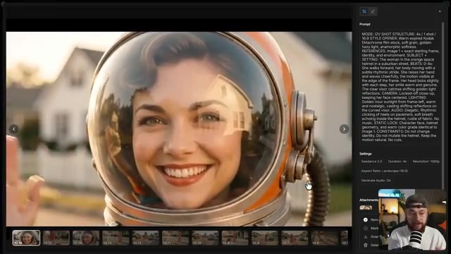
🔍 Agrandir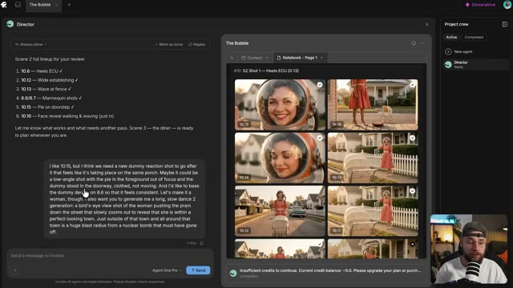
🔍 AgrandirDonc voici cette génération particulière de Sea Dance 2 ici. Mais j'avais l'impression que ça ne ressemblait pas au même porche que l'un des visuels clés précédents. C'était donc ce plan ici. C'est là qu'on voulait que la sorte de mannequin féminin reçoive la tarte. Le genre de contexte se perdait un peu ici. Donc tout d'abord, j'ai simplement demandé à l'agent un d'aller corriger ça, et c'est le plan qu'on a obtenu en retour, que j'ai vraiment, vraiment aimé, surtout ce genre de feuille qui entre dans le cadre et voltige juste pour ajouter un peu de mouvement là-dedans, j'adore vraiment ça, et c'est ici que je commence à décrire la nouvelle façon dont je
Interface & Outils : Interface de l'application de création vidéo "The Bubble" (Agent One Pro) avec panneau de chat à gauche et galerie de plans/keyframe à droite, incluant la mini-caméra PiP de l'animateur.
Contenu textuel & Code : Texte du prompt visible dans le panneau latéral droit (Image 2) : "MODE: I2V SHOT STRUCTURE: 4s / 1 shot / 16:9 STYLE OPENER: Warm expired Kodak Ektachrome, vintage anamorphic softness, slight halation on highlights...". Dans le panneau de chat (Image 3) : "I also want you to generate me a long, slow dance 2 generation: a bird's-eye view shot of the woman pushing the pram down the street that slowly zooms out...".
Action / Démonstration : Le créateur navigue dans l'interface de son outil de direction artistique par IA, montrant les différentes itérations de plans, passant d'une vue de révision des plans à un plan spécifique généré par Seedance 2.0, puis montrant le texte du prompt en cours de modification.
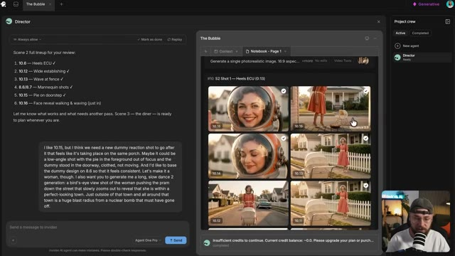
🔍 Agrandir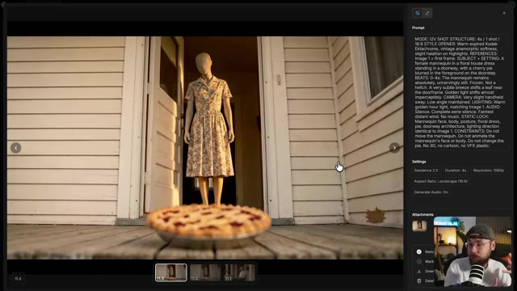
🔍 Agrandir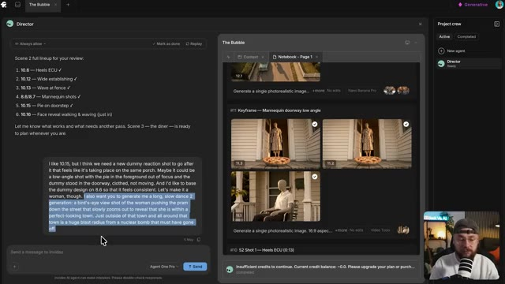
🔍 AgrandirJe veux que le film se termine, je dis à notre agent que je veux avoir ce plan séquence vraiment très long où la femme pousse le landau sur la route et la caméra effectue un zoom arrière continu, un peu comme un plan à la grue révélant davantage le lieu, et ensuite nous voyons en quelque sorte la réalité de ce qui s'est passé. Et suite à cette nouvelle idée que j'ai eue, nous avons reçu ce visuel clé Nano Banana Pro ici. J'adore le fait que toutes les sortes de maisons, de pelouses et de rues aient l'air tout simplement trop parfaites.
Interface & Outils : Interface web d'un outil de génération par IA (type assistant Agent One Pro / Nano Banana Pro) avec panneau de chat et visionneuse d'images.
Contenu textuel & Code : Texte de prompt visible : "a bird's-eye view shot of the woman pushing the pram down the street that slowly zooms out to reveal that she is within a perfect-looking town." Paramètres : Nano Banana Pro, Résolution 2K (2048x2048), Format horizontal (16:9).
Action / Démonstration : Le créateur montre l'interface de l'agent textuel où il formule sa demande de plan-séquence, puis zoome sur le résultat visuel clé généré par Nano Banana Pro représentant le quartier suburbain.
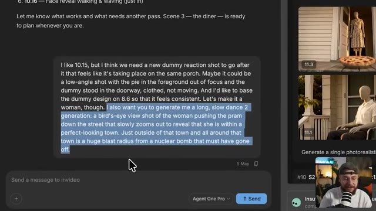
🔍 Agrandir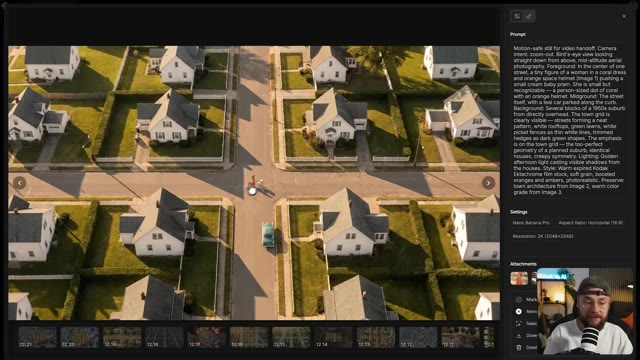
🔍 Agrandir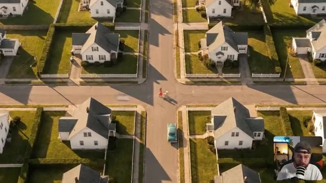
🔍 AgrandirIls sont trop réguliers. Ce n'est pas vraiment à quoi ressemble une ville en réalité, n'est-ce pas ? Et c'est parce que cette femme vit dans une situation assez étrange. Donc vous pouvez voir ici, nous avons dit que la caméra zoome lentement arrière pour révéler qu'elle se trouve au sein d'une ville à l'apparence parfaite, juste à l'extérieur de la ville et tout autour, il y a un énorme rayon d'explosion provenant d'une bombe nucléaire qui a dû exploser. Donc maintenant nous comprenons pourquoi la femme porte ce casque. Ce doit être pour la protéger d'une sorte de retombée nucléaire et nous comprenons également pourquoi il n'y a pas d'autres personnes dans la ville. C'est comme si elle était posée
Interface & Outils : Interface logicielle de type agent IA (invideo / assistant de production vidéo) avec panneau de chat textuel et grille de prévisualisation des plans générés, ainsi qu'un encadré PiP montrant le créateur face caméra.
Contenu textuel & Code : Textes visibles dans les prompts et le chat décrivant la scène : vue aérienne de la femme poussant une poussette dans une ville parfaite entourée d'un rayon d'explosion nucléaire, paramètres techniques (Nano Banana Pro, 2K, format 16:9).
Action / Démonstration : Le créateur navigue dans l'interface de l'outil de production vidéo, montrant le prompt textuel détaillé décrivant la caméra qui zoome arrière pour révéler la ville entourée des dégâts d'une bombe nucléaire.
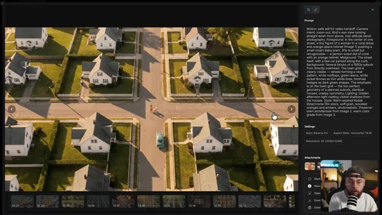
🔍 Agrandir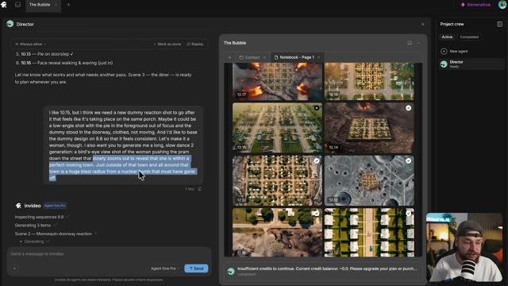
🔍 Agrandir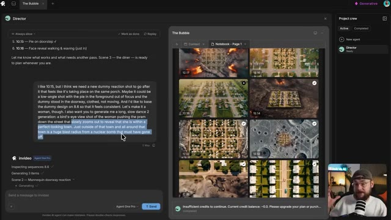
🔍 Agrandirtous ces mannequins comme une sorte de mécanisme d'adaptation psychologique. Et donc bien sûr ce plan final est vraiment crucial, il lie le tout ensemble et j'ai récupéré toute une charge d'options différentes ici c'était un processus de va-et-vient avec l'agent parce que je savais que je voulais vraiment réussir cela c'est l'une des versions que j'ai fini par ne pas utiliser mais c'était un peu comme un second choix par rapport à celui qui est apparu dans le film final donc je veux vraiment vous montrer ceci Vraiment juste cette puissante combinaison de Nano Banana Pro et Sea Dance 2 faisant travailler leurs muscles de l'IA, si vous voulez formuler ça comme ça, parce que le plan final de ceci est juste assez incroyable.
Interface & Outils : InVideo (Agent One Pro) et Seedance (avec incrustation vidéo PiP du créateur dans le coin inférieur droit).
Contenu textuel & Code : Texte du prompt dans InVideo : "I like 10.15, but I think we need a new dummy reaction shot to go after it that feels like it's taking place on the same porch..." Texte du panneau latéral dans Seedance : "MODE: I2V SHOT STRUCTURE: 10s / 1 shot / 16:9 STYLE OPENER: Warm expired Kodak Ektachrome film stock..."
Action / Démonstration : Le créateur navigue dans l'interface d'InVideo pour examiner différentes options de séquences et de plans générés par IA, puis consulte les paramètres et prompts détaillés dans Seedance.
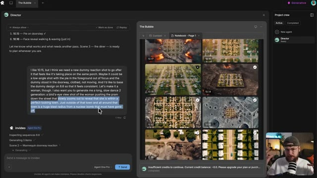
🔍 Agrandir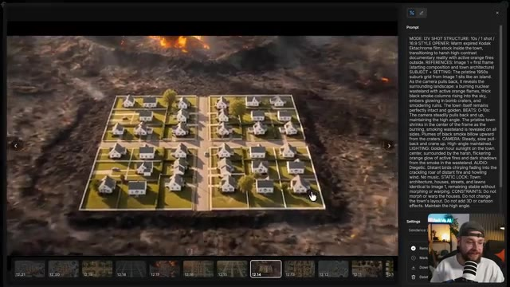
🔍 AgrandirJ'adore vraiment, vraiment ça. Mon genre de problème, c'est à quel point le périmètre de la ville était carré. J'adore la sensation d'échelle, cependant, et le fait qu'on comprenne vraiment que quelque chose d'affreux s'est produit. ça n'avait juste pas tellement de sens qu'il y ait juste ce genre de périmètre en grille rectangulaire, exactement comme une clôture normale qui protégeait la ville de cette explosion nucléaire. Donc après un peu plus d'allers-retours avec l'agent, j'ai finalement obtenu le plan de révélation que je cherchais et maintenant je pense que je vais vous montrer le film terminé. Donc comme je le dis, l'idée et le scénario viennent de moi.
Interface & Outils : Interface logicielle de type Seedance avec une visionneuse vidéo centrale, une timeline de vignettes en bas et un panneau latéral droit affichant les détails du prompt, les paramètres et une vignette incrustée (PiP) du créateur.
Contenu textuel & Code : Panneau latéral affichant le texte complet du prompt : "MODE: I2V SHOT STRUCTURE: 10s / 1 shot / 16:9 STYLE OPENER: Warm expired Kodak Ektachrome film stock inside the town, transitioning to harsh high-contrast documentary reality with active orange fires outside. REFERENCES: Image 1 = first frame (starting composition and town architecture)..." et paramètres "Settings / Seedance 2...".
Action / Démonstration : Le créateur navigue à travers la chronologie des plans vidéo générés et examine les détails visuels du plan de révélation dans l'interface logicielle.
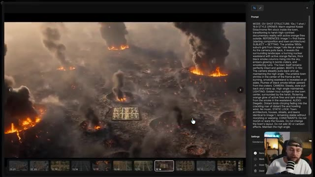
🔍 Agrandir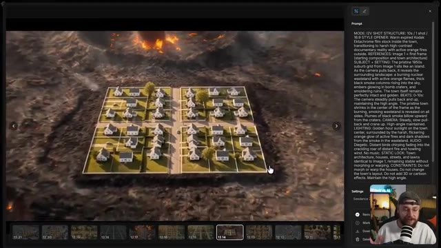
🔍 Agrandir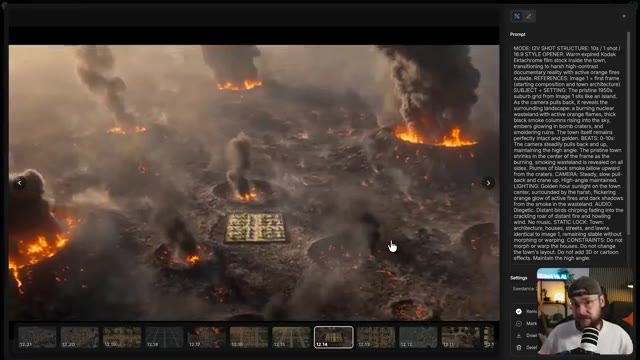
🔍 Agrandiret puis mon genre de directeur adjoint, on peut dire agent one, a pris les devants et s'est occupé de tout le travail technique fastidieux, à partir de quelques simples entrées conversationnelles de ma part. Voici le résultat que j'ai obtenu après un montage basique. Donc, en jetant un coup d'œil à ma timeline ici, vous pouvez voir que je n'ai pas vraiment fait grand-chose,
Interface & Outils : Interface d'un outil de génération de vidéo IA (avec panneau de prompt à droite et timeline de clips en bas) et logiciel de montage Adobe Premiere Pro.
Contenu textuel & Code : Texte du prompt visible sur l'image 1 (« MODE: I2V SHOT STRUCTURE: 10s / 1 shot / 16:9... »), paramètres de réglage, et organisation des clips médias dans le chutier et la timeline de Premiere Pro sur l'image 4.
Action / Démonstration : Présentation de l'interface de génération vidéo avec les prompts textuels utilisés par l'agent IA, puis affichage de la timeline de montage vidéo basique sur Adobe Premiere Pro.
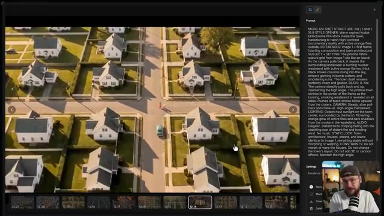
🔍 Agrandir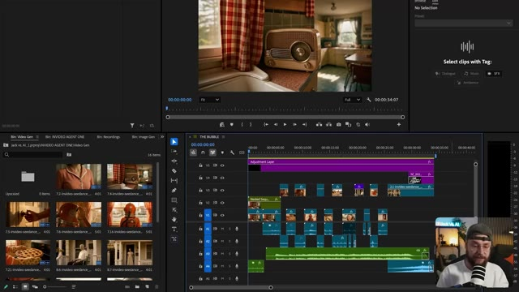
🔍 Agrandirpour être honnête avec vous. La musique joue un rôle vraiment important, le morceau lui-même, pour donner en quelque sorte cette sensation d'ironie. Comme toujours, j'ai pris les devants et j'ai ajouté mon calque d'effet tout en haut ici, qui intègre énormément de grain de pellicule. J'aime vraiment le rendu que ça donne pour ce projet particulier, même sur ce genre de plan final. Si on zoome vraiment de près, il y a ces bâtiments détruits, je trouve vraiment que ça apporte ce joli effet de texture, une chose simple qu'on peut ajouter directement dans son logiciel de montage, et j'ai aussi fini par générer ce genre de truc vraiment kitsch.
Interface & Outils : Adobe Premiere Pro (logiciel de montage vidéo avec panneaux de timeline, moniteur de prévisualisation, chutier et panneau audio).
Contenu textuel & Code : Noms des pistes sur la timeline (Adjustment Layer, Nested Sequence), tags audio (Dialogue, Music, SFX), et texte graphique à l'écran 'Wish you were Here!'.
Action / Démonstration : Le curseur de la timeline se déplace et l'écran de prévisualisation zoome sur les plans finaux de la vidéo.
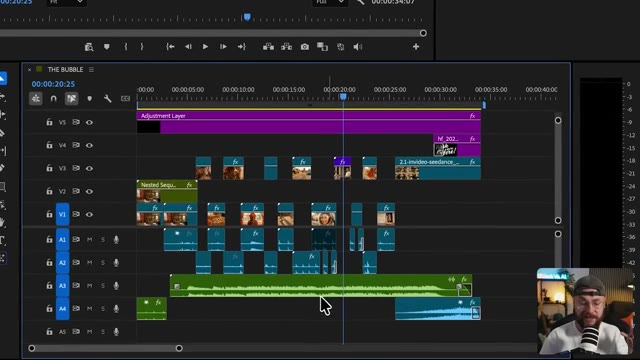
🔍 Agrandirgraphique du genre "wish you were here" que l'on pourrait voir sur une vieille carte postale ou quelque chose comme ça. Et si je vais simplement masquer cet élément, vous pouvez voir que le plan de révélation final a un peu plus de sens physique. Il n'a pas ce genre de périmètre vraiment parfait que nous avions avec cette autre génération.
Interface & Outils : Adobe Premiere Pro
Contenu textuel & Code : Texte graphique stylisé "Wish You Were Here!" sur une vue aérienne d'un quartier de banlieue touché par un cratère/catastrophe.
Action / Démonstration : Le créateur montre le plan avec le texte graphique de carte postale, puis masque l'élément pour comparer avec le rendu final plus naturel et sans le périmètre parfait de la génération précédente.
Ça a en quelque sorte un rayon d'explosion autour. Donc c'est sur ça que j'ai fini par atterrir pour le film terminé. Et puis, ouais, ce genre d'élément graphique ajoute juste un petit plus, je pense. Une autre chose vraiment basique que j'ai faite pour le premier plan ici, c'est que j'ai juste pris la première image et je l'ai transformée en fixe parce que je voulais en quelque sorte m'attarder sur cette image de la radio pendant un moment.
Interface & Outils : Adobe Premiere Pro (logiciel de montage vidéo) avec incrustation PiP du présentateur dans le coin inférieur droit.
Contenu textuel & Code : Timeline de montage, fenêtres de prévisualisation affichant des plans générés par IA (quartier détruit, intérieur de cuisine avec une radio vintage), chutier avec des clips vidéo nommés ("7.2-invideo-seedance...").
Action / Démonstration : Le créateur démontre son interface de montage sur Premiere Pro, navigue entre la timeline et les différents plans de sa vidéo pour illustrer le processus de post-production et l'utilisation d'images fixes.
Et puis j'ai juste ajouté ce mouvement de caméra vraiment assez délicat avant que la main de notre personnage n'entre dans le cadre et allume la radio. En bas ici, c'est juste moi qui ai ajouté quelques effets sonores de talons qui claquent dans la cuisine, qui se rapprochent en quelque sorte. Et en fait, c'est le seul effet sonore que j'ai ajouté à l'ensemble du projet. Tout le reste a été généré nativement à l'intérieur de Sea Dance 2.
Interface & Outils : Adobe Premiere Pro (avec un encadré PiP de Jack en bas à droite).
Contenu textuel & Code : On peut voir le chutier (Bin: Video Gen) avec miniatures de clips vidéo (générés par Sea Dance 2), la timeline de montage multi-pistes avec des calques vidéo et audio, et le moniteur affichant un plan de cuisine rétro avec une radio.
Action / Démonstration : Le créateur montre son projet de montage vidéo dans Premiere Pro, en illustrant la mise en place des pistes audio et des clips générés par IA.
Vous remarquerez également que le film terminé a fini par être beaucoup plus court que prévu initialement. J'ai simplement estimé qu'il n'avait pas besoin de durer 60 secondes au final. J'étais vraiment satisfait du type de rythme que j'obtenais pendant que je montais. C'est un peu de cela dont je parlais. Quand vous utilisez Agent 1, vous pouvez en quelque sorte vous adapter au vol. Vous n'êtes pas toujours obligé de vous en tenir à votre plan initial.
Interface & Outils : Adobe Premiere Pro (logiciel de montage vidéo)
Contenu textuel & Code : Timeline de montage avec pistes vidéo et audio (V1, A1, etc.), moniteur de prévisualisation affichant un plan de cuisine vintage, chutier à gauche avec des vignettes vidéo (ex: "7,2-invideo-seedance...", "7,5-invideo-seedance..."), panneau audio "Essential Sound" à droite, et incrustation vidéo (PiP) du créateur en bas à droite.
Action / Démonstration : Le créateur présente son projet de montage vidéo sur Adobe Premiere Pro, illustrant la structure de sa timeline et l'agencement des clips générés par IA.
Et si vous avez une nouvelle idée ou que vous voulez que votre film soit un peu plus court ou se termine d'une manière différente, c'est tout à fait bien. Vous n'êtes bloqué dans aucune méthode de travail particulière. J'étais donc vraiment très heureux du résultat final que j'ai obtenu pour ce projet. Je trouvais qu'il était vraiment visuellement intéressant. Il avait un ton vraiment marquant et créait ce sentiment de mystère et d'intrigue, ce qui correspondait exactement à ce que je recherchais.
Interface & Outils : Adobe Premiere Pro (logiciel de montage vidéo)
Contenu textuel & Code : On aperçoit dans le panneau de gauche un chutier ("jack vs. AI_1.prproj") contenant plusieurs vignettes de clips vidéo générés ("7.2-invideo-seedance...", "7.4-invideo-seedance...", "7.5-invideo-seedance..."). Au centre, le moniteur de prévisualisation montre une scène de cuisine avec une radio rétro. En bas, la timeline du projet "THE BUBBLE" regroupe plusieurs pistes vidéo et audio. En bas à droite, Jack apparaît dans un encadré PiP (Picture-in-Picture) devant son micro.
Action / Démonstration : Le créateur montre son espace de montage dans Adobe Premiere Pro avec la timeline du film en cours de construction et les assets vidéo générés par IA dans le chutier.
Mais comme tout outil, Agent One n'est pas sans défauts. Et je vous manquerais de respect, à vous et à NVIDIA, si je n'en parlais pas également. Le premier problème est qu'il peut falloir beaucoup de temps pour récupérer vos générations. Et bien que cela soit logique puisque Agent One exécute de nombreux processus différents en même temps, ce n'est toujours pas idéal.
Interface & Outils : Adobe Premiere Pro et l'application Agent One (interface de génération et de direction de projet IA).
Contenu textuel & Code : Dans l'image #3, le panneau de prompt affiche : "MODE: I2V SHOT STRUCTURE: 10s / 1 shot / 16:9 STYLE OPENER: Warm expired Kodak Ektachrome film stock inside the town...". Dans l'image #4, le panneau "Director" affiche du texte de suivi de séquences ("Inspecting sequences 10.6, 10.7, 10.8...", "Scene 2 keyframes and videos — all accepted: 1. 10.6 - Heels ECU video...", etc.) et un message d'avertissement en bas : "Insufficient credits to continue. Current credit balance: ~0.0. Please upgrade your plan or purchase credits."
Action / Démonstration : Le créateur présente l'interface de montage de son projet, puis montre les prompts détaillés utilisés pour générer les plans cinématiques et l'interface de suivi du projet Agent One avec l'historique des générations.
Si NVIDIA trouve un moyen d'accélérer les générations, je pense que cela va beaucoup aider. Et le prochain domaine qu'ils devraient examiner, selon moi, c'est la consommation de crédits. C'est vraiment difficile de savoir combien de crédits vous dépensez à un moment donné. Ce serait vraiment super d'avoir une sorte de compteur de crédits quelque part dans l'interface utilisateur, que l'on puisse simplement garder à l'œil. On pourrait ainsi le voir sous forme de barre qui se vide au fil du temps à mesure que l'on dépense ses crédits.
Interface & Outils : Interface logicielle floutée avec affichage incrusté (PiP) du créateur dans le coin inférieur droit.
Contenu textuel & Code : Texte affiché à l'écran : "note two credit spend". L'interface principale montre une grille de quatre aperçus d'images floutées et des zones de texte floutées.
Action / Démonstration : Le créateur parle tout en présentant l'interface de l'application avec sa webcam en incrustation.
Mais j'irais même un peu plus loin en montrant réellement combien de crédits cela va coûter pour mener à bien un certain processus. Donc, par exemple, ici, nos générations Seedance 2 pourraient être accompagnées d'un compteur de crédits. Et ensuite, l'Agent 1 va en fait de l'avant et vous demande, voulez-vous réellement tout générer ce que je suggère ?
Interface & Outils : InVideo (Agent One Pro / The Bubble) avec affichage PiP du créateur en bas à droite.
Contenu textuel & Code : Interface de l'outil InVideo affichant un chat textuel avec l'Agent One Pro, un avertissement sur les crédits insuffisants ("Insufficient credits to generate. Need -27.3 credits, current credit balance: -0.0"), ainsi qu'une grille de vignettes vidéo.
Action / Démonstration : Le créateur présente l'interface d'InVideo tout en parlant, avec sa webcam intégrée en incrustation (PiP) dans le coin inférieur droit.
Avez-vous vraiment besoin de chacun de ces visuels clés Nano Banana Pro ? Ou est-ce qu'on peut simplement faire les plus basiques, et ensuite C-Dance 2 peut s'occuper de combler les lacunes ? Parce qu'on sait que C-Dance 2, en tant que modèle vidéo, peut souvent nous donner d'excellents résultats à partir d'une simple feuille de personnage pour certaines scènes. Et évidemment, si l'Agent 1 a même suggéré ce flux de travail, cela pourrait potentiellement réduire votre consommation de crédits d'une bonne tranche. Cela étant dit, je pense vraiment que l'Agent 1 a sa place dans ce genre d'écosystème créatif. Gardons bien à l'esprit aussi que ce n'est même pas encore en version bêta.
Interface & Outils : Interface logicielle de type assistant IA ("The Bubble" / Agent One Pro) avec grille de prévisualisation vidéo et panneau de chat textuel.
Contenu textuel & Code : Vignettes vidéo montrant des scènes de type film (personnages dans une cuisine avec une tarte, casque de scaphandre), messages d'erreur de crédit ("Insufficient credits to continue"), et panneaux de génération de keyframes (Seedance 2.0).
Action / Démonstration : Le curseur de la souris survole une vignette vidéo dans l'interface pendant que l'application gère les tâches de génération et le suivi du projet.
C'est encore une version alpha. Je pense donc que c'est un très bon début pour NVIDIA. C'est un outil vraiment intéressant à utiliser. Comme je le dis, si vous voulez aller jeter un œil à l'Agent 1 de NVIDIA, vous trouverez un lien en bas dans la description. Et si vous avez la moindre question, n'hésitez pas à la poser en bas. J'essaie toujours de répondre à autant d'entre elles que possible. Si vous avez envie de découvrir un peu plus de mon contenu, vous trouverez une autre de mes vidéos sur l'écran en ce moment même. Cela étant dit, les gars, passez une excellente journée et je vous retrouve dans la prochaine !
Interface & Outils : Interface de l'application Seedance 2.0 avec panneau de prompt latéral, paramètres techniques et encadré vidéo PiP du créateur.
Contenu textuel & Code : Texte du prompt visible à l'écran : "MODE: 12V SHOT STRUCTURE: 4s / 1 shot / 16:9 STYLE OPENER: WARM expired Kodak Ektachrome film stock, soft grain, golden hazy light, anamorphic softness... SETTING: The woman in the orange space helmet in a suburban street...". Paramètres : Seedance 2.0, Duration 4s, Resolution 1080p, Aspect Ratio Landscape (16:9), Generate Audio: On.
Action / Démonstration : Le créateur présente l'interface d'un outil de génération vidéo par IA tout en parlant à la caméra, visible en incrustation (PiP) dans l'angle inférieur droit.